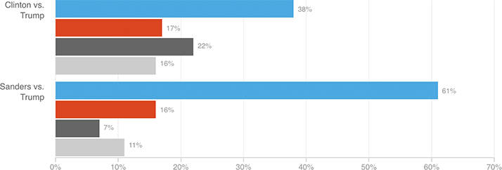

Clinton Still Lags Sanders Among Young Voters
A new poll of Americans age 18 to 30 shows that Hillary Clinton fares far worse than Bernie Sanders among young voters. She still beats Trump easily in a Clinton-Trump matchup, but one-fifth of young voters in that scenario say they’d choose someone else. In a Sanders-Trump matchup, the Vermont senator would win by a far greater margin — and leave fewer voters on the table.
